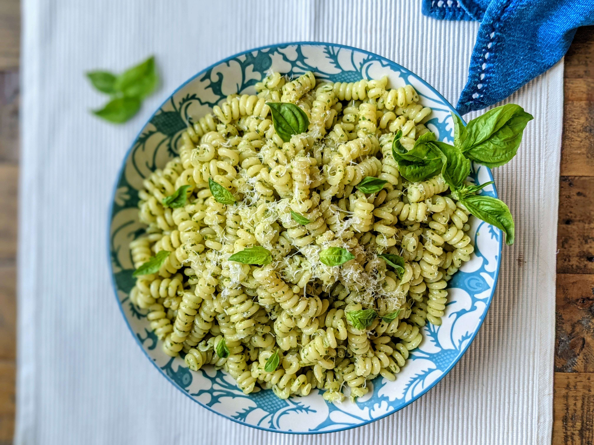

Pesto Pasta

Description
This dish is quick and light, perfect if you you are in a rush or just fancy
something easy. Prep time - 5 mins Cook time 12 mins
Ingredients
- 200g pasta (any type will do)
- 1 white onion, finely diced
- 1 courgette, cut however you like
- 2 garlic cloves, crushed
- Dried oregano, a healthy pinch
- A dozen sun dried tomatoes
- 500g pancetta (or smoked bacon), diced
- 100g pesto, or more to taste
- Mozzarella, torn
- Parmesan, grated
- Fresh basil
- Cracked black pepper
Method
- Boil the pasta until al dente and leave to one side when done
- Meanwhile, sautee the pancetta/bacon on a mid-high heat for 5 minutes
- Add the onion and courgette and sautee for a further 5 minutes
- Season with the black pepper and oregano, avoid using salt as the bacon is salty enough
- Once the onions and courgettes have softened (usually after around 5 minutes)
add the diced garlic for 30 seconds and then take the pan off the heat
- Mix in the remaining ingredients and cooked pasta together
Return to homepage